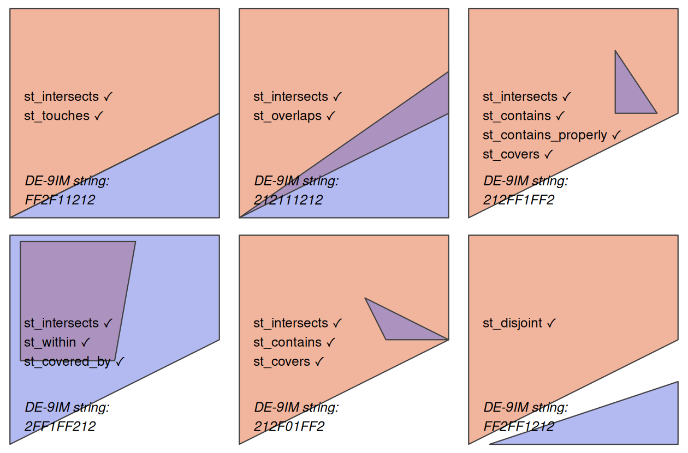
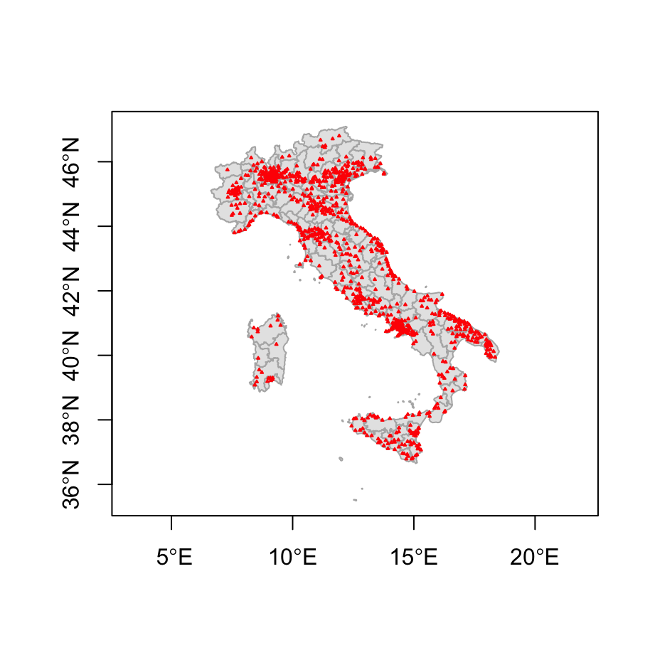
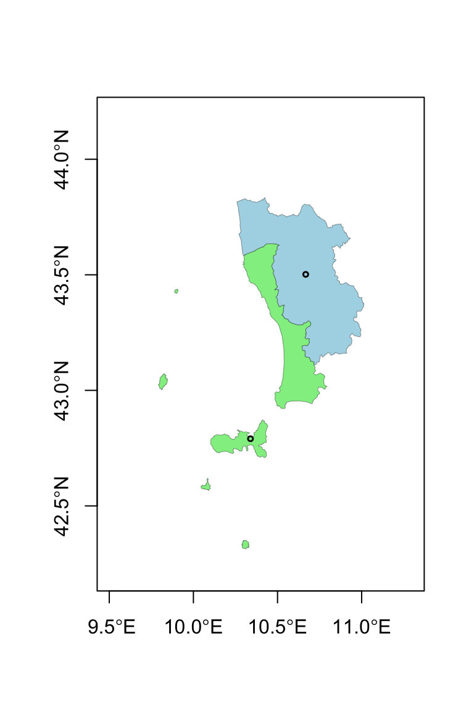
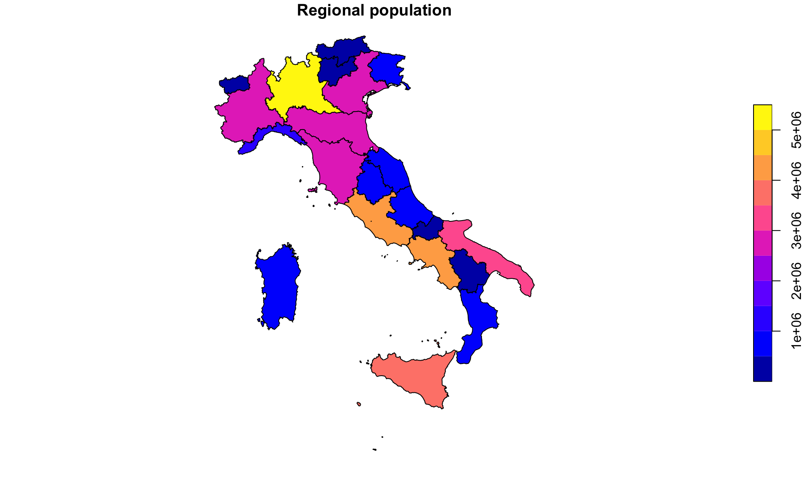
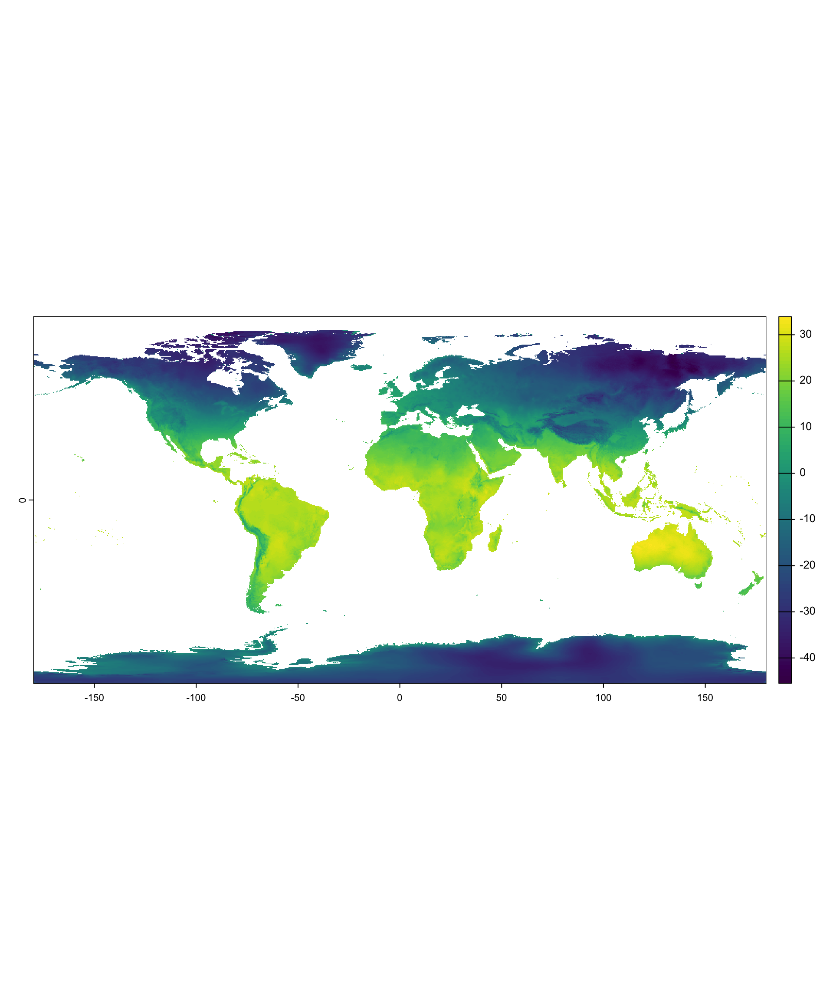
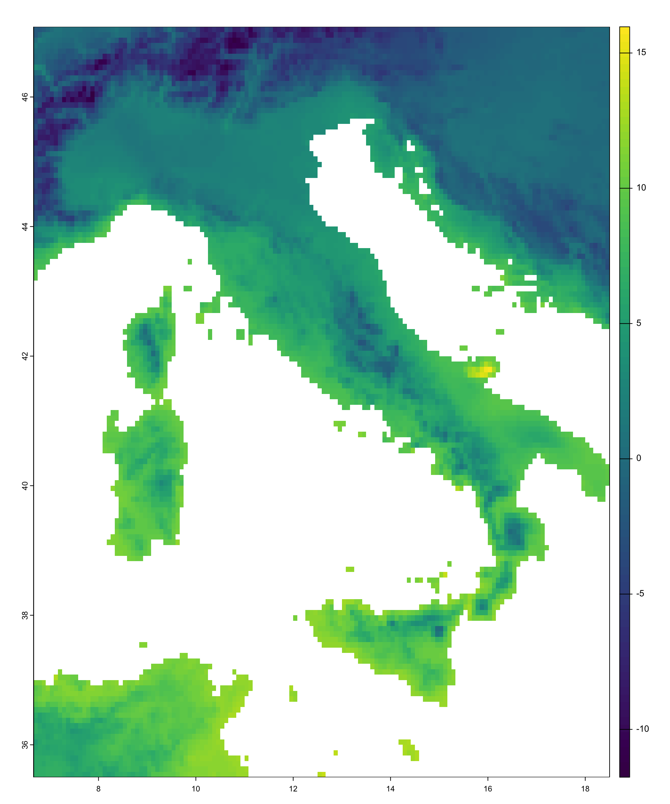
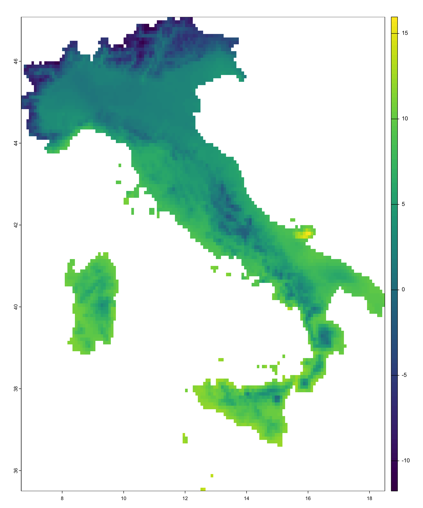
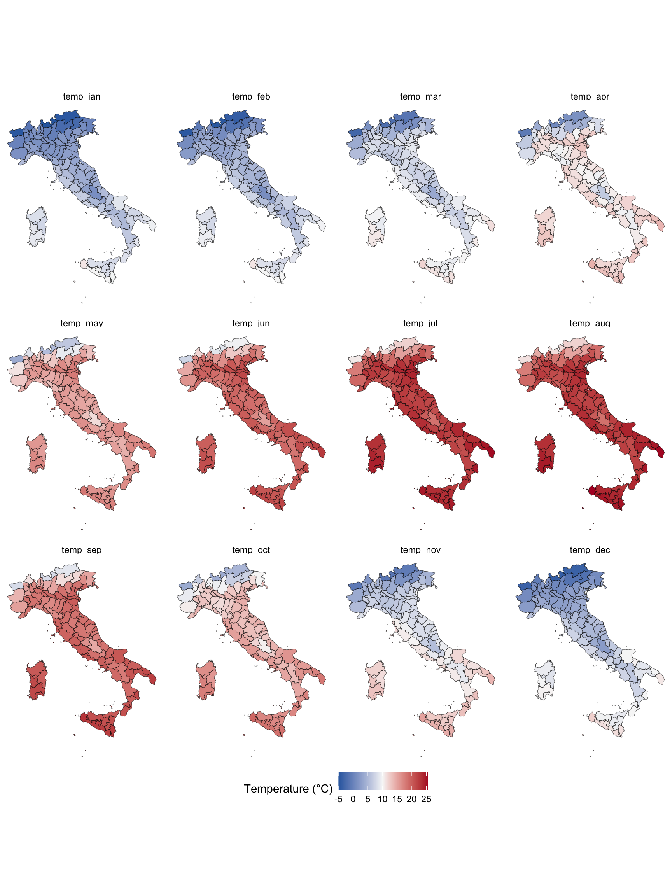

polygon_matrix <- cbind(
x = c(0, 0, 1, 1, 0),
y = c(0, 1, 1, 0.5, 0)
)
polygon_sfc <- st_sfc(st_polygon(list(polygon_matrix)))
#we could have created an sf object.
#This is just to show you that sf commants works also
#without attributes, as long as they have a geometry
point_df <- data.frame(
x = c(0.2, 0.7, 0.4),
y = c(0.1, 0.2, 0.8)
)
point_sf <- st_as_sf(point_df, coords = c("x", "y"))Spatial Data Analysis
Operating with spatial datasets
Sant’Anna School of Advanced Studies
Matteo Coronese
m.coronese@santannapisa.it
June 2026
What will we learn in this course?
Lecture 1 Spatial data basics
Lecture 2 — Operating with spatial datasets
- Who belongs to what? (topological relationships)
- How far is it? (distance relationships)
- What is nearby? (buffers and neighborhoods)
- At which scale do we measure outcomes? (aggregation)
- How to build an exposure measure (raster extraction)
Lecture 3 — Elements of spatial dependence and econometrics
Lecture 4 — Applied spatial workflows
Constructing spatial variables
Spatial variables are rarely directly observed. They are usually constructed from:
- spatial relationships;
- distances;
- overlaps;
- neighboring structures;
- aggregation over space.
Examples:
- distance to the nearest hospital;
- average pollution within a municipality;
- population exposed to flooding;
- neighboring economic activity;
- temperature exposure over agricultural land.
Spatial data manipulation is often aimed at transforming spatial data into measurable, meaningful quantities.
Spatial relationships between geometries
Many spatial variables emerge from relationships between objects. Typical questions include:
- Which points fall inside a polygon?
- Which regions share a border?
- Which observations are within a given distance?
- What is the nearest location?
- Which areas overlap?
Spatial relationships can be conceptually based either on:
Topology
- depends on relative spatial arrangement, independendtly of their distance
- is a binary predicate (
TRUE/FALSE) - is \(x\) inside \(y\)? Does \(x\) overlaps with \(y\)?
Distance:
- depends on physical distance measurements
- mostly continuous, can be binary
- how far is \(x\) w.r.t \(y\)? Is \(x\) within 100km w.r.t \(y\)?
Topological relationships
Binary topological relationships are qualitative, logical statements (
TRUE/FALSE).They form the theoretical basis for spatial joins (merging data based on their spatial relations).
Order is important!
- e.g.
equals,intersects,crosses,touchesandoverlapsare symmetrical - e.g.
containsandwithinare not
- e.g.
Topological relationships do not require meaningful distance units.
sf functions that implement them.

Simple topological relations
st_intersects() is a catch-all predicate, identifying cases of touch, cross or within. Examples:
- which cities belong to which countries;
- which regions overlap;
- which observations fall inside a buffer.
- Topological predicates often return sparse lists of spatial relationships.

Sparse geometry binary predicate list of length 3, where the predicate
was `intersects'
1: 1
2: (empty)
3: 1[1] "sgbp" "list"[1] 3[1] 1Simple topological relations II
It might be more convenient to have a non-sparse output
[,1]
[1,] TRUE
[2,] FALSE
[3,] TRUE[1] "matrix" "array" [1] 3 1[1] FALSEThe same logic applies to other predicates: Which points are within the polygon?
A concrete example - To which province each city belongs to?
Topological relations \(\rightarrow\) Question: what belongs to what?
- Which labour market area contains each firm?
- Which protected area contains each habitat?
- Which flood zone contains each building?
- Which households are covered by a mobile network?
prov <- giscoR::gisco_get_nuts(
year = "2021",
nuts_level = 3,
country = "IT",
resolution = "01"
)
regions <- giscoR::gisco_get_nuts(
year = "2021",
nuts_level = 2,
country = "IT",
resolution = "01"
) %>%
st_drop_geometry() %>%
select(
region_id = NUTS_ID,
region_name = NUTS_NAME
)
prov %<>%
mutate(
region_id = substr(NUTS_ID, 1, 4)
) %>%
left_join(.,
regions,
by="region_id")
prov %<>% select(NUTS_NAME, region_name)
data("world.cities", package = "maps")
cities <- world.cities %>%
filter(country.etc=="Italy")
cities <- st_as_sf(
cities,
coords = c("long", "lat"),
crs = 4326
)Then
The output is still a sparse list: for each city, we obtain the province(s) it intersects.

[1] 8 name country.etc pop capital
6 Aci Sant'Antonio Italy 17566 0 NUTS_NAME
33 Arezzo
0 1
27 958 All cities are matched at most with one province, which makes sense. But wait, how can it be that we also have zeros?
Spatial data are messy :)
Spatial joins
The output of st_intersects() contains all the information we need:
Each row refers to a city, each column to a province.
We could manually use this information to transfer province attributes:
name country.etc pop capital province
1 Abano Terme Italy 19167 0 Padova
2 Abbiategrasso Italy 30515 0 Milano
3 Acerra Italy 51394 0 Napoli
4 Aci Castello Italy 17930 0 Catania
5 Aci Catena Italy 28459 0 CataniaSpatial joins II
Spatial joins automate exactly this process:
A spatial join is analogous to a database join, except that the matching key is a spatial relationship rather than a common identifier.
By default:
but other predicates can also be used:
By default st_join performs a left join. left=FALSE operates a inner join.
A similar logic governs spatial subsetting, which uses st_intersect as default
name country.etc pop capital province
188 Cascina Italy 40959 0 Pisa
207 Castelfranco di Sotto Italy 11990 0 Pisa
660 Pisa Italy 87401 0 PisaNote that if you inspect cities_prov, you will find some NA in the province column: coastal problematic cities prevent a proper join.
Distance relationships
Topological relationships tell us whether two objects are spatially related. Many empirical questions require more information:
Distance relations \(\rightarrow\) Question: What can people, firms, or regions reach?
- Healthcare accessibility (e.g nearest hospital);
- Access to labour markets (e.g. distance to major employment centers);
- Exposure to environmental hazards (e.g. distance from coast, rivers, pollution centers);
- Market access and trade costs (e.g. distance from ports, infrastructures);
The main function you need to use is st_distance().
Distances depend on the coordinate system.
Recall from Lecture 1:
- geographic CRS (e.g. WGS84) store coordinates;
- projected CRS (e.g. UTM) store locations in planar units;
- distances are meaningful only when the units themselves are meaningful.
Distance and coordinate systems
The same distance can be computed using different representations of the Earth.
Units: [m]
[,1]
[1,] 479684.8Units: [m]
[,1]
[1,] 479820.7Units: [m]
[,1]
[1,] 479803.6Unlike st_buffer, distances are generally safe in geographic coordinates. Without S2, the geodetic (shortest distance between to points on the surface of Earth) you are computing is even slightly more accurate.
All three approaches hey rely on different geometric assumptions:
- S2 ON: spherical Earth;
- S2 OFF: ellipsoidal Earth;
- UTM: planar approximation.
For Rome–Milan (~480 km), the discrepancy is only about 100 meters.
Pairwise distances
st_distance() can compute distances between many geometries at once.
The result is a distance matrix.
Rows and columns correspond to spatial observations. In this case, we are computing all pair-wise distances between 5 specific cities.
n geometries × n geometries \(\rightarrow\) n × n distance matrix
You can also pass two distinct vectors:
n geometries × m geometries \(\rightarrow\) n × m distance matrix
Distance matrices are the building blocks of many spatial methods:
- distance-based exposure measures;
- spatial weights matrices;
- spatial econometrics;
- Conley standard errors.
Point-to-polygon distances
So far we have computed distances between points. When a polygon is involved, the distance is computed w.r.t. the nearest edge.
Some cities could not be assigned to a province because of geometry resolution issues. Instead of asking:
Which province contains this city?
we can ask:
Which province is closest to this city?
[1] "Salerno"This identifies the nearest province using distances.
st_nearest_feature() automates this process.
[1] 58 90 45 74 27 65 76 96 49 27 27 14 27 70 3 74 44 98 27 16 18 90 70 27 3
[26] 27 43The result is the index of the closest province for each city.
We can now fix the NA is cities
Distances between polygons
What happens when two or more polygons are involved?
Units: [m]
[,1]
[1,] 0Why? st_distance computes the minimum distance, and Pisa and Livorno (!) share a border.
A distance of zero may be perfectly reasonable:
- neighboring municipalities;
- adjacent administrative regions;
- contiguous land parcels.

However, many social science applications require representing each area by a single location:
- commuting between municipalities;
- trade between regions; gravity models.
- spatial spillovers.
Geometry-derived variables and neighborhoods
Geometries can generate new variables.
NUTS_NAME region_name area
1 Treviso Veneto 2471738729 [m^2]
2 Nuoro Sardegna 5636855056 [m^2]
3 Trapani Sicilia 2460671584 [m^2]
4 Padova Veneto 2112795108 [m^2]
5 Rovigo Veneto 1664049154 [m^2]Areas can be useful:
- to normalize measures which increase with land (e.g. # storms);
- compute e.g. population density; agricultural land share, GDP per km^2
Buffers define local neighborhoods around geometries.
The buffer contains all locations within 50 km of Rome.
Buffers can be used to construct distance-based relationships (when proximity matters!)
name country.etc pop capital province is_close_rome
1 Albano Laziale Italy 37278 0 Roma TRUE
2 Anguillara Sabazia Italy 17666 0 Roma TRUE
3 Anzio Italy 49354 0 Roma TRUE
4 Aprilia Italy 66871 0 Latina TRUEA shorthand is st_is_within_distance.
Examples:
- assigning households to the nearest hospital;
- assigning firms to the nearest port;
- identifying municipalities within 50 km of a power plant;
- measuring population exposed to a flood event.
Spatial aggregation
Spatial data often come at a finer resolution than the one needed for analysis.
Suppose we want to estimate the population of each Italian province from city-level data.
To obtain province-level geometries, we replace city geometries with province polygons
[1] 985So far, only ordinary tabular join. Question: could have we obtained the same with st_join?
Spatial aggregation II
We can further aggregate provinces into regions.
The population of each region is obtained by summing provincial populations.

- Spatial aggregation: unlike ordinary data frames,
summarise()also automatically aggregates geometries.sfperforms a geometric union (st_union()).
Question: wich is the right scale of analysis?
Construct regional indicators from local data;
- Labour: firms → labour market areas; workers → commuting zones
- Environment: pollution or climate observations → administrative units
- Urban: crime incidents, traffic accidents, Airbnb listings → census tracts
- Telecom: signal measurements, mobile-phone pings → coverage areas
Harmonize data at different administrative scales;
Raster-vector interactions
Practical research often requires raster-vector interaction.
Question: What is the average temperature of each Italian province?
We have climate information as a raster. Our provinces are polygons. How do we combine them?
Similar questions:
- Population exposed to high pollution
- Vegetation conditions (NDVI) around farms;
- Night-time lights as a proxy for local economic activity;
- Heat exposure of workers across labour market areas;



Raster extraction
Raster extraction transfers raster information to vector geometries, by means of an aggregating function.
[1] 4.005000 7.718002 10.910698 [1] "NUTS_NAME" "region_name" "wc2.1_5m_tavg_01" "wc2.1_5m_tavg_02"
[5] "wc2.1_5m_tavg_03" "wc2.1_5m_tavg_04" "wc2.1_5m_tavg_05" "wc2.1_5m_tavg_06"
[9] "wc2.1_5m_tavg_07" "wc2.1_5m_tavg_08" "wc2.1_5m_tavg_09" "wc2.1_5m_tavg_10"
[13] "wc2.1_5m_tavg_11" "wc2.1_5m_tavg_12" "geometry" The result is nlyr new variables attached to each province.
Local, focal, zonal, global. Raster extraction can be interpreted as a form of zonal aggregation. The zones are defined by vector geometries rather than by another raster.
Question:
Which month do you expect to display the strongest North–South gradient?
A nice plot
prov %>%
pivot_longer(
cols = starts_with("temp_"),
names_to = "month",
values_to = "temperature"
) %>%
mutate(
month = factor(
month,
levels = paste0(
"temp_",
c("jan","feb","mar","apr","may","jun",
"jul","aug","sep","oct","nov","dec")
)
)
) %>%
ggplot() +
geom_sf(aes(fill=temperature))+
facet_wrap(month~., nrow=2) +
scale_fill_gradient2(
low = "#2166AC",
mid = "#F7F7F7",
high = "#B2182B",
midpoint = 10,
na.value = "aliceblue",
name = "Temperature (°C)"
) +
theme_void() +
theme(
legend.position = "bottom"
)